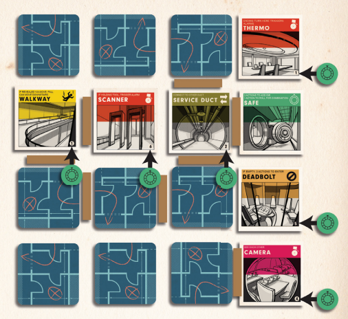

Burgle Bros
Board Game Arena 官方规则文档
Overview
Burgle Bros is a cooperative rogue-like puzzle game with tile exploration and problem-solving. Your goal is to open the safe on each floor, then escape with the loot through the stairs on the top floor. All members of the heist team must escape for the players to win the game. Players lose the game if anyone is caught by a guard without being able to spend a stealth token.
On Your Turn
Take up to 4 actions. If you end your turn with two or more unused actions, an event will be triggered. You can perform actions in any order and can do the same action multiple times in a turn if possible. After your turn is ended, the guard on your floor will move.
Some actions that reveal new information (like peeking at a tile) cannot be undone. If you choose to restart or undo actions, the game will reset to that point instead of the beginning of your turn.
Actions
- Peek: Reveal an adjacent room tile.
- Move: Move to an adjacent room tile. If it is unrevealed, reveal it. If a guard is on the tile, lose a stealth token.
- Tile-specific actions: Hack a computer -OR- add a Die to a Safe (costs 2 actions) -OR- Crack a Safe
- Character ability: Each character has a specific ability. This ability might only be available as your first action on a turn, might be free, or consume more than one action.
- Use Tools (free): Discard a Tool card and apply its effect.
- Trade (free): Trade Tools and/or Loot with another player on the same tile (with the other player's permission).
Cracking Safes
First, the safe tile must be located. Then, to crack the safe, all tiles in the same row and column must be revealed. For example, if the safe tile is in A1, then all the tiles in column A and all the tiles in row 1 must be revealed. This means A2, A3, A4, B1, C1, and D1 (in the four-by-four layout).

During your turn, you may add a "safe die" for 2 actions. No more than six dice can be added to a given safe tile. Once all the tiles for a safe are revealed, rolling safe dice on the safe tile will "crack" the safe. The safe combination is the small numbers on the lower right corner of the tiles in the same row and column. For example, if the numbers are 1, 3, 1, 4, 6, and 3, you will need to roll safe dice until a 1, 3, 4, and 6 have been rolled. The quantity of tiles with the same number doesn't matter--you do not need to roll multiple times. Small green circle tokens will appear on room tiles that match the numbers rolled. Once all required numbers have been rolled, the safe opens and you will automatically receive a tool card and a loot card.
Guards
Each guard's destination is determined by the top card drawn from the Patrol deck. Each guard's movement speed is dictated by its guard die (yellow square at the guard's destination). Guards always take the shortest path to their destination. If multiple equal paths are available, the guard takes the left-most path at a fork. Once a guard reaches their destination, a new patrol card is revealed and a destination is set. If the guard has any movement remaining, they use it to move towards their new destination.
Triggering an alarm changes the destination for the guard on that floor to the location of the alarm. Once the guard reaches that location, they will choose a new destination (new patrol card). For each alarm on the board, the guard gets one additional movement speed.
After a safe is cracked, the guard on the current floor and each guard below the current floor are aware of the safe being cracked and permanently increase their movement speed by one.
Each time the patrol deck runs out, it is reshuffled with some new cards added and old cards removed. The movement speed of the guard on that floor permanently increases by one. Maximum movement speed for a guard is six.
Scenarios
The Office Job is the beginner scenario. The building is 2 floors of 16 tiles, arranged in 4x4. Each floor has at least 1 Stairs tile and 1 Safe tile.
The Bank Job is the default scenario and is medium difficulty. The building is 3 floors of 16 tiles, arranged in 4x4. Each floor has at least 1 Stairs tile and 1 Safe tile.
The Fort Knox Job is hardest. The building is only 2 floors, but has a 5x5 layout and 3 Safe tiles. Each floor has 24 room tiles and 1 empty space (a gray square surrounded by walls). Each floor has at least 1 Stairs tile and 1 Safe tile, with a remaining Stairs tile and a remaining Safe tile randomly distributed.
Characters
All characters have a basic skill and an advanced skill. You may get to choose, depending on table settings. The advanced skills tend to be more powerful, but have more requirements.
| THE ACROBAT | |
|---|---|
| Retired Performer | |
| Basic Skill: Flexibility | Advanced Skill: Climb Window |
| You may move into a tile with a guard as a free action (multiple times per turn) and will not lose a stealth token if you leave the tile before the guard moves (meaning you leave the tile with the guard before ending your turn to not lose stealth). | If you are on a perimeter tile (or next to the empty tile in Fort Knox) you may spend 3 actions to move up or down one floor to the corresponding tile, all movement rules for trying to enter a tile still apply, doing so consumes all your actions. |
| THE HACKER | |
|---|---|
| Computer Guy | |
| Basic Skill: Jammer | Advanced Skill: Laptop |
| You do not trigger fingerprint, laser, or motion tiles and other players will not trigger those tiles if you are there. The ability is not optional and does not apply to detector and thermo tiles. | You can add a hack token to yourself as an action. This token can be used as a fingerprint, laser or motion hack token by any player. You can only store up to one hack token on yourself. |
| THE HAWK | |
|---|---|
| Recon Pro | |
| Basic Skill: X-Ray | Advanced Skill: Enhance |
| As a free action, once per turn, you can peek through an adjacent wall to reveal a tile. | As a free action, once per turn, you may peek at a tile up to two spaces away. You cannot skip over unrevealed tiles and you cannot see through walls but you can use the ability to peek around corners and peek up stairs. |
| THE JUICER | |
|---|---|
| Electronics Expert | |
| Basic Skill: Crybaby | Advanced Skill: Reroute |
| As a free action (multiple times per turn), you may trigger an alarm on an adjacent tile, but not through walls.
Note - you cannot trigger an alarm on a hidden tile or a tile with a guard on it. |
As a free action, once per turn, you may pick up an active alarm on your tile and draw a new patrol card, or discard one of your alarm tokens to trigger an alarm. |
| THE PETERMAN | |
|---|---|
| Safecracker | |
| Basic Skill: Steady Hands | Advanced Skill: Drill |
| Roll 1 additional die when rolling for the safe or keypad. | You may add dice and roll on safes above or below your tile. However, you're unable to loot safes from another floor, so the loot remains in the safe until retrieved. Do note that all loot must be carried up to the roof to end and win the game. |
| THE RAVEN | |
|---|---|
| Maverick Falconer | |
| Basic Skill: Distract | Advanced Skill: Disrupt |
| As a free action, you may place the crow up to two tiles away from your character but not through walls. The crow remains in that location until you move it again. The guard loses an move each time he enters the crow's tile (so a crow placed on the guard's tile won't affect the guard until a subsequent move into said tile.) | As a free action, you may place the crow on your current tile. If the guard starts his movement on the same tile as the crow and there are no alarms, he loses all movement and the crow is returned to you. |
| THE RIGGER | |
|---|---|
| Tinkerer Savant | |
| Basic Skill: The Solution | Advanced Skill: Tinker |
| You start with the dynamite tool. When any player finds a tool, they may draw two tools, keep one, and discard the other. | You can lose one Stealth token to draw a Tool. When any player finds a tool, they may draw two tools, keep one, and discard the other. |
| THE ROOK | |
|---|---|
| Mastermind | |
| Basic Skill: Orders | Advanced Skill: Disguise |
| As an action, once per turn, you may move another player one tile (the other player gets to confirm the move). When moving the other player, lasers and deadbolts do not cost extra actions but otherwise all normal movement rules, such as alarm tiles and rolling for locked keypads, apply. | You may spend your first action swapping places with any player. This does not count as entering the tile for either of you. Please note that the disguise action is only available as the first action and other actions, even free, such as tool use executed first would consume the opportunity to make use of the disguise action. |
| THE SPOTTER | |
|---|---|
| Psychic Gone Rogue | |
| Basic Skill: Clairvoyance | Advanced Skill: Precognition |
| As an action, once per turn, you may look at the top card of the patrol deck for your floor. Then choose to place it on the top or bottom of the deck. | As an action, once per turn, you may look at the top card of the event deck. Then choose to place it on the top or bottom of the deck. |
Room Tiles
Note - alarms are not triggered if the guard is also in the room.
- ATRIUM - On this tile, you take the Peek action on the tile directly above or below (on the adjacent floor). If a guard moves to that tile, you lose a stealth token.
- CAMERA - An alarm is triggered on this tile if you are on it while any guard (on any floor) is either stopped on or moving through another Camera tile.B
- COMPUTER - Each Computer tile corresponds to a different type of alarm tile (fingerprint, laser, or motion). You can take the Hack action while on this tile to add Hack tokens to it. When you enter an alarm tile, you may remove a Hack token from the corresponding Computer tile (if any exist) to cancel the corresponding alarm on any floor. A Computer tile can contain up to 6 Hack tokens.
- DEADBOLT - If another player or a guard is in this room, you may enter it normally. Otherwise, it costs 3 actions to Move into the tile. If you attempt to Move into a tile that is not yet revealed and have less than 3 actions, the tile remains revealed but you do not enter and all remaining actions are consumed.
- DETECTOR - An alarm is triggered if a player with a Loot card or Tool card Moves onto it.
- FINGERPRINT - An alarm is triggered if a player Moves onto it.
- FOYER - A guard on the same floor can see any players on this tile from adjacent tiles (not diagonally) on the same floor in addition to from the tile itself. If seen this way, the player must discard a Stealth token.
- Walls still prevent guards from seeing you.
- If you remove a Stealth token because a guard was adjacent to you while on this tile, and then the guard moves into your tile, you must discard a second Stealth token.
- If two Foyers are adjacent, the guard cannot see "across" into the further Foyer. Foyers don't chain together.
- KEYPAD - If this tile is locked, you must roll 1 die.
- On a 6, the tile is unlocked (indicated by an Open door token) and can be entered by anyone.
- If a 6 is not rolled, you stay where you are and the action is spent.
- If you make other attempts to Move into the Keypad tile, you may add an addtional dice for each attempt you have made this turn.
- LABORATORY - The first player to enter this tile draws a Tool card.
- LAVATORY - When revealed, 3 Stealth tokens are placed on this tile. If the guard enters this tile while you are on it, remove a Stealth token from the tile instead of your own supply. One Stealth token is removed for however many players are on the tile. Once the Lavatory Stealth tokens are used up, you must use one of your own.
- LASER - An alarm is triggered if a player Moves onto this tile and does not spend a second action.
- MOTION - An alarm is triggered if the player moves out of the tile before his/her turn ends.
- SAFE - On a Safe tile, you may take the "Add Safe Dice" for two actions or "Roll Safe Dice" to attempt to crack the safe. Safes start with no dice and can have up to 6 dice.
- SECRET DOOR - You may enter this tile from any adjacent tile through a wall. You still cannot Peek or Move from this tile through a wall. Guards cannot move through walls into Secret Door tiles.
- SERVICE DUCT - If both Service Duct tiles are revealed, you can Move from one to another, even if they are on different floors.
- STAIRS - On tile reveal, a Downstairs token is placed on the corresponding tile on the next floor up (unless it is the top floor). You may Move or Peek from the Stairs tile to its corresponding tile. If the Stairs tile is on the highest floor, spend an action on it to Escape to the roof (after all loots are discovered).
- THERMO - An alarm is triggered if the player ends their turn while on this tile.
- WALKWAY - If you Move onto this tile before it is revealed, you automatically fall to the floor below onto the corresponding tile (unless it is the lowest floor, in which case nothing happens).
- Falling onto a tile does not count as entering it (meaning you can fall onto a Deadbolt, Keypad, or Fingerprint tile without triggering its effects).
- If you Move onto the Walkway tile after it is revealed, you do not automatically fall to the floor below, but you can choose to for 1 action.
- From this tile, you can Peek at the tile below (if unrevealed).
Events
An Event must be drawn if 2 or more actions remain after ending your turn. You may not move back and forth between tiles to avoid an Event. Events can help or hinder the team, depending on the circumstances.
- BROWN OUT - All alarm tokens on all floors are removed. A new patrol card is drawn for each alarm removed this way.
- BUDDY SYSTEM - Move a player's token onto your current tile.
- CHANGE OF PLANS - If there are no active alarms on your floor, the guard on your floor gets a new patrol card.
- CRASH! - If there are no active alarms on your floor, then the guard's new destination will be the current tile you are on.
- DAYDREAMING - The guard on your floor has one less movement this turn.
- DEAD DROP - Current player passes all Tools and Loot to the player on their right.
- ESPRESSO - The guard on your floor has one additional movement this turn.
- FREIGHT ELEVATOR - Fall up one floor, this can't be used as an escape method.
- GO WITH YOUR GUT - If you are adjacent to an unrevealed tile, move on to it now, your choice if there is more than one unrevealed tile.
- GYMNASTICS - Until your next turn, all players can walk onto a walkway tile above their current tile as if it were stairs.
- HEADS UP! - The next player gains an additional action on their turn.
- JUMP THE GUN - Skip the next player's turn (including the guard movement).
- JURY-RIG - Gain a tool.
- KEYCODE CHANGE - Any open keypad tiles are now locked again.
- LAMPSHADE - Gain a Stealth token.
- LOST GRIP - Fall down one floor.
- PEEKHOLE - You may peek at one adjacent tile, even through a wall or up/down floors (you may choose to ignore this event).
- REBOOT - All revealed computer rooms reset to one hack token.
- SHIFT CHANGE - Guard does not move on your floor, instead revealed guards on other floors move this turn.
- SHOPLIFTING - Alarms are triggered on all laboratory tiles that have had Tools taken from them.
- SQUEAK - The guard on your floor moves one tile towards the nearest character.
- SWITCH SIGNS - The guard on your floor and his destination swap positions.
- THROW VOICE - Move the guard destination into an adjacent tile from its current location (following normal movement rules).
- TIME LOCK - Players cannot move up or down through stairs for one round.
- VIDEO LOOP - All camera tiles are disabled for one round.
- WHERE IS HE? - Guard on your floor jumps to his current destination.
Loot
The player who cracks the safe gets one Loot card and one Tool card. All Loot has some kind of penalty/hindrance. Loot cannot be dropped but can be traded to another player on the same tile as a free action (if both players agree). Loot must be held by a player to Escape to the roof.
- BUST - You cannot use Tools, although you can still hold them.
- CHIHUAHUA - At the start of your turn, roll a die. On a 6, the dog barks and triggers an alarm on your tile.
- CURSED GOBLET - The player who draws this loses one Stealth token (unless they have none).
- GEMSTONE - You must spend an extra action to move into a tile with other players.
- GOLD BAR - The safe contains an additional gold bar. A player may hold at most 1 gold bar at a time, which means another player must get to the safe and retrieve the second gold bar. Both must be picked up to win (although you can still escape). Note - a Take Cards button appears when you're in a safe with a gold bar in it. When you click it, if you're allowed to pick up the gold bar, you get the Trade Loot popup. If you're already holding a gold bar when you click the Take Cards button, nothing happens.
- ISOTOPE - If you move into a Thermo tile while holding this, an alarm is immediately triggered.
- KEYCARD - A safe cannot be cracked unless the player with the keycard is on it.
- MIRROR - The player has one less action per turn. However, the player can pass through Laser tiles without triggering an alarm.
- PAINTING - You cannot use secret doors or service ducts. You can still move onto their tiles normally.
- PERSIAN KITTY - At the start of turn, roll a die. If the result is 1 or 2, the cat escapes. It lands 1 tile away closer to the nearest alarm. Any player can pick it up to regain the Persian Kitty Loot. Players cannot Escape to the roof if the Persian Kitty is loose. If the Persian Kitty is already on a tile, do not roll (i.e., Kitty doesn't move again).
- STAMP - An Event card is drawn if 3 or less actions are used on your turn (instead of 2).
- TIARA - The guard will see you if you move onto a tile adjacent to him (similar to the Foyer tile).
Tools
A player can get a Tool guard by either cracking the safe, being the first player to enter a Laboratory tile, drawing certain Event cards, or using the Rigger's advanced ability. After applying its effect, it is discarded. Using a Tool does not count as one of your 4 actions. Trading a Tool with another player does not count as one of your 4 actions. Tools cannot be dropped.
- BLUEPRINTS - Peek at a tile anywhere on any floor.
- CROWBAR - Permanently disable an adjacent tile (including up/downstairs). This does not block movement or trigger an alarm.
- CRYSTAL BALL - Look at the top 3 Events on the deck. Put them back in any order.
- DONUTS - Select a guard. That guard does not move the next time he would move.
- DYNAMITE - Destroy an adjacent wall. Trigger an alarm on your current tile.
- E.M.P. - Remove all triggered alarms. Alarms cannot be triggered until the start of your next turn.
- INVISIBLE SUIT - You cannot be seen by guards or cameras and gain one additional action this turn.
- MAKEUP KIT - All players on your tile gain 1 Stealth token.
- ROLLERSKATES - Gain 2 additional actions this turn.
- SMOKE BOMB - Add 3 Stealth tokens on your tile. These can be used by players on this tile. (Similar to the Lavatory tile).
- STEREOSCOPE - Use during the "Crack Safe" action to change the result of one die to the result of your choice.
- THERMAL BOMB - Create stairs on your current tile. Trigger an alarm on your current tile.
- The stairs can go up or down.
- This can be used on the top floor to Escape.
- VIRUS - Place 3 Hack tokens on any revealed computer tile.